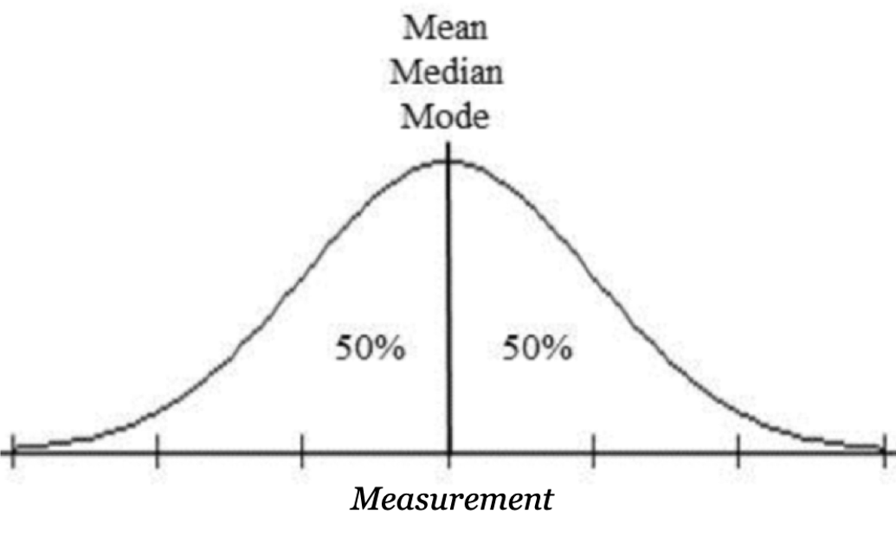
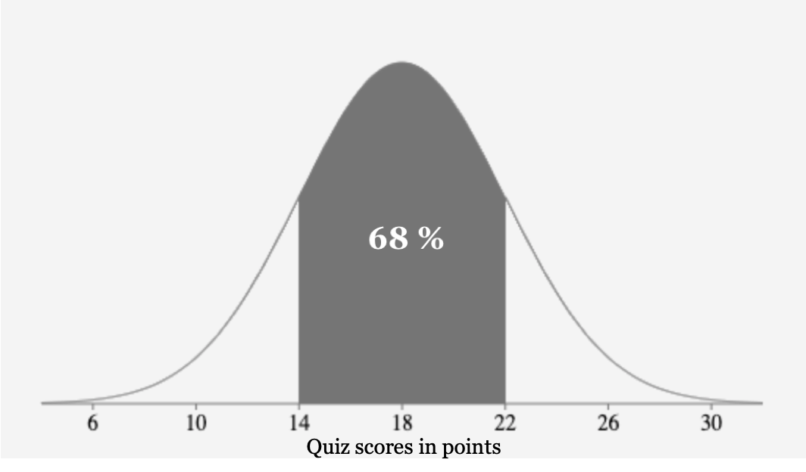
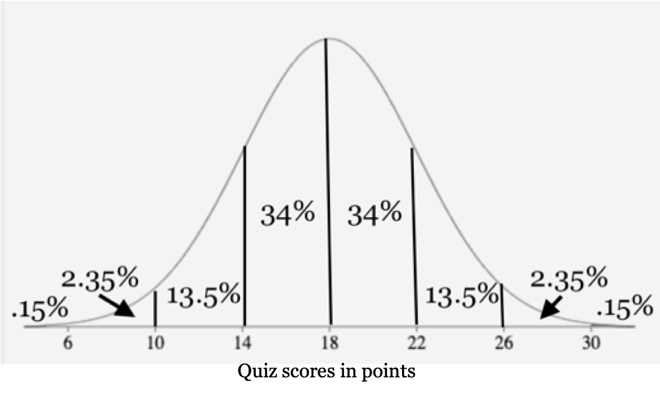
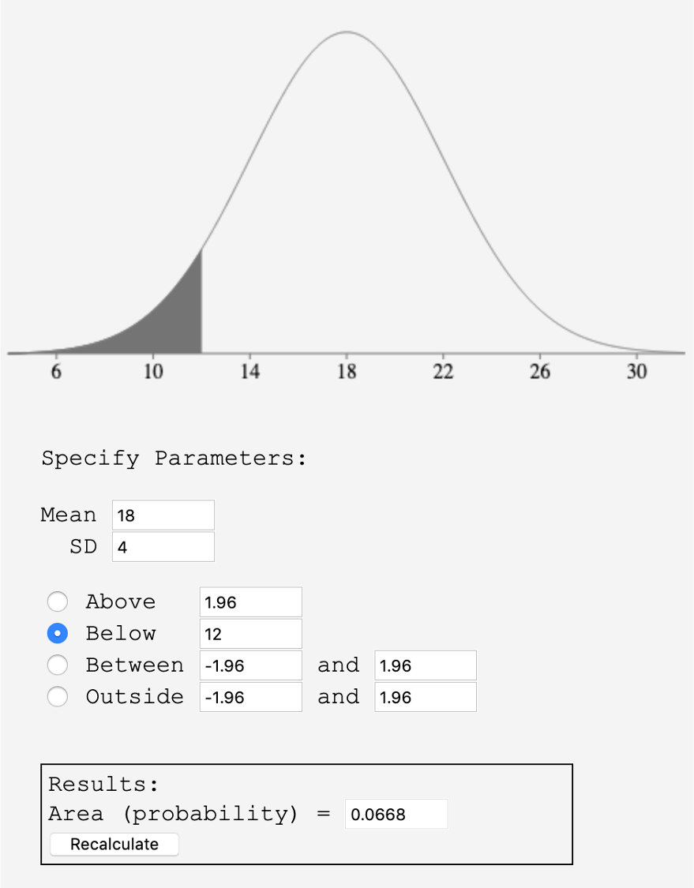
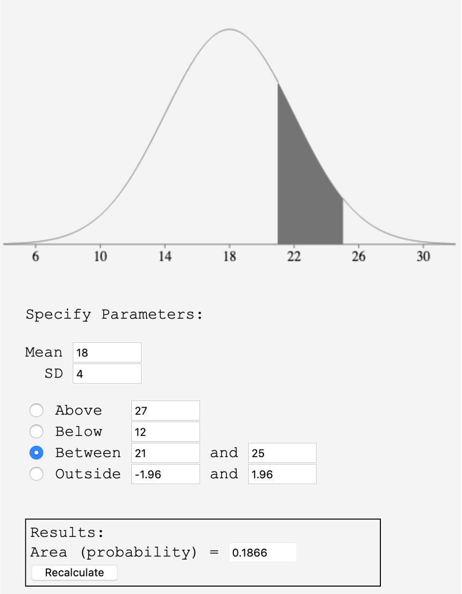
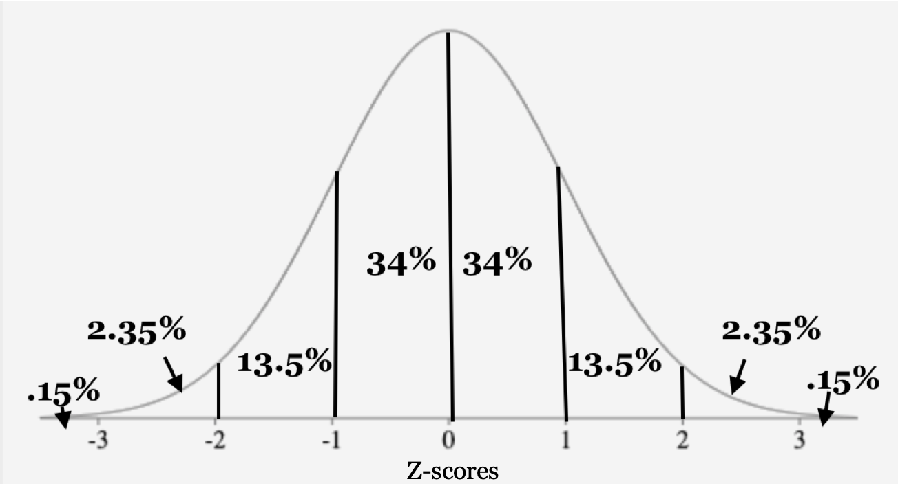
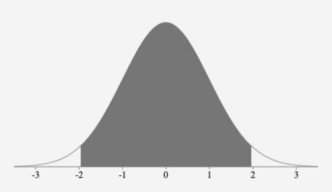

Calculate and interpret the bounds of a 95% confidence interval given the point estimate and the standard error
Figure3.6.1.Alternative Video Lessons
SubsectionIntroduction to The Normal Distribution
There is a pattern or shape that comes up frequently when graphing data called the Normal distribution. You might be familiar with it as the bell curve. When we take measurements like the lengths of newborn babies or the weights of potato chip bags on an assembly line there are usually more measurements near the mean and fewer as we get further away from the mean on each side. We often see histograms with this shape:
Notice how the shape is unimodal and symmetric with larger and smaller values getting less and less common as they get further from the mean. When we take samples from a population we might not get an exact Normal distribution but it is often close. We call this approximately Normal or nearly Normally distributed. The curve drawn over the histogram shows that the data are nearly Normal. Earlier in this chapter we learned about the mean, median and mode as measures of center and the standard deviation as a measure of variation or spread. The mean is often written with the greek letter mu, \(\mu\text{.}\) The standard deviation is usualy represented by the lowercase Greek letter sigma, \(\sigma\text{.}\)
SubsectionProperties of the Normal Distribution
Regardless of the data values, the Normal distribution has these properties:
The shape is unimodal and symmetric around the center.
The mean, median and mode are approximately the same value in the center.
Due to the symmetry, approximately 50% of the data values are below the mean, and approximately 50% of the data values are above the mean.

Almost all of the area under a Normal curve is within 3 standard deviations of the mean, so we use the standard deviation as our scale.
Data within two standard deviations of the mean are considered typical or usual. Data beyond two standard deviation are considered unusual. Data beyond 3 standard deviations are considered rare.
Now let’s look at an example where we draw and label a Normal distribution given the mean and standard deviation 1
The test scores on a math quiz are approximately normally distributed with a mean of 18 points and a standard deviation of 4 points. Draw the Normal distribution and label the axis using the standard deviation.
We start by drawing a Normal curve and the horizontal axis. Then we place the mean of 18 points in the center of the graph and make 3 marks on each side, ending where the curve gets close to the axis.
Each mark represents one standard deviation. As we move to the right of the mean we will add the standard deviation of 4 points to get 22, 26 and 30 points. These are the values that are 1, 2 and 3 standard deviations above the mean.
Then we move to the left of the mean we subtract the standard deviation of 4 from 18 to get 14, 10 and 6 points. These are the values that are 1, 2 and 3 standard deviations below the mean.
\begin{gather*}
\text{Mean}-1 \text{ standard deviation} = 18-4 = 14\\
\text{Mean}-2 \text{ standard deviations} = 18-2(4) = 10\\
\text{Mean}-3 \text{ standard deviations} = 18-3(4) = 6
\end{gather*}
SubsectionThe Empirical Rule
No matter what the mean and standard deviation are for a Normal Distribution, they always have the same shape or distribution of the data. We can describe this with the Empirical Rule which is also called the 68-95-99.7 Rule.
The numbers in the 68-95-99.7 rule describe the percentage of data or area within 1, 2 and 3 standard deviations of the mean. Let’s look at our previous example with scores on a math quiz that are approximately normally distributed with a mean of 18 points and a standard deviation of 4 points.
According to the Empirical rule, about 68% of all the data values fall within one standard deviation of the mean, or between 14 and 22 points.

About 95% of all the data values fall within two standard deviation, or between 10 and 26 points.
About 99.7% of all the data values fall within three standard deviations, or between 6 and 30 points.
Now you can try this next example:
Example3.6.3.
The weights of black lab dogs are approximately normally distributed with a mean of 78 pounds and a standard deviation of 7 pounds.
Draw and label a sketch of this distribution.
Use the Empirical Rule to complete following statements.
Approximately 68% of black labs weigh between and pounds.
Approximately 95% of black lab dogs weigh between and pounds.
Approximately 99.7% of black lab dogs weigh between and pounds.
Solution.
We start by drawing the Normal curve and the horizontal axis, labeling 3 standard deviations on each side.
Approximately 68% of black labs weigh between 71 and 85 pounds.
Approximately 95% of black labs weigh between 64 and 92 pounds.
Approximately 99.7% of black labs weigh between 57 and 99 points.
SubsectionUsing the Empirical Rule to Calculate Approximate Probabilities
Now that we have learned about the Empirical rule we can use it to find approximate probabilities. First we will calculate the percentage in each segment of the Normal distribution. Returning to our example of quiz scores with a mean of 18 points and a standard deviation of 4 points, we can divide the curve into segments by drawing a line at each standard deviation.
Now, since we know that approximately 68% of the values are between 14 and 22 points, and the graph is symmetric, we divide 68% by 2 to get:
\begin{equation*}
68\%\div2=34\%
\end{equation*}
So each of the middle 2 segments are 34% of the area each.
Next, we know that 95% of the values fall within 2 standard deviations or between 10 and 26 points. That also includes the 68% though, so to get the area of the next two segments, we subtract:
\begin{equation*}
95\%-68\%=27\%
\end{equation*}
Then since there is one segment on each side, we divide that by 2:
So the next two segments from the mean are 13.5% each.
Continuing outward, 99.7% of the values fall within 3 standard deviations of the mean or between 6 and 30 points. Since that includes the 95% we subtract:
We can summarize all the calculations in this drawing:

Now let’s continue our quiz score example to see how to use the Empirical Rule to find probabilities.
Example3.6.4.
For the quiz score data that are approximately normally distributed with a mean of 18 points and a standard deviation 4 points, use the 68-95-99.7% rule to calculate the following probabilities:
What percentage of students earned scores between 22 and 30 points?
What percentage of students earned scores above 14 points?
What percentage of students earned a score below 14 or above 22 points?
Solution
Using the diagram above, we add the two segments between 22 and 30 to get
Continuing with the black lab dogs whose weights are approximately normally distributed with a mean of 78 pounds and a standard deviation 7 pounds, use the 68-95-99.7% rule to calculate the following probabilities:
What percentage of black labs weigh between 78 and 92 pounds?
What percentage of black labs weigh below 71 points?
What percentage of black labs weigh below 64 or above 78 points?
Solution.
First we need to draw this distribution and label three standard deviations on each side of the mean to determine where these weights fall. That will tell us which segments to add up. Here is our drawing of this distribution from before.
Using this Normal curve along with the diagram above we see we need to add the two segments between 78 and 92 pounds to get
52.5% of black labs weigh below 64 or above 78 pounds. Notice we could have done this in a faster way since 78 is the mean we know the percentage above the mean is 50%. We could have added
SubsectionUsing Technology to Calculate Exact Probabilities
The Empirical rule is used to find approximate probabilities and it only works if the number is one of the labels on our scale. We usually want to calculate an exact answer with any value. We will use technology to calculate probabilities with two different methods: Onlinestatbook.com and spreadsheets. Check with your class notes or instructor on which technology to use.
and enter the mean and standard deviation. Then select the option that matches the probability you want to find: Above, Below, Between or Outside and enter the probability you want to find. Then click on the Recalculate button.
To use a spreadsheet, we will use the spreadsheet formula
=NORM.DIST(value, mean, standard deviation, cumulative)
This function always gives the probability to the left of a number or
We can use this formula to find greater than, between and outside probabilities as well. Here are the commands we will use and we will explain them in the next example with visuals.
For the quiz score data that are approximately normally distributed with a mean of 18 points and a standard deviation 4 points, use technology to calculate the following probabilities:
What percentage of students earned a score below 12 points?
What percentage of students earned scores above 27 points?
What percentage of students earned scores between 21 and 25 points?
What percentage of students earned scores less than 11 or more than 23?
Solution
First, using OnlineStatbook, we we will enter the mean of 18 points and the standard deviation of 4 points. Then we select Below and enter 12. This gives us a result of \(0.0668\) as shown in the image or \(6.68\%\text{.}\)
To use a spreadsheet, we enter =NORM.DIST(12, 18, 4, 1). The last value is always a 1 to indicate that we want a cumulative probability or area. This also gives us a result of \(0.0668\) or \(6.68\%\text{.}\)

To use OnlineStatbook, we we will keep our mean of 18 points and standard deviation of 4 points. Then we select Above and enter 27. This gives us a result of \(0.0122\) as shown in the image or \(1.22\%\text{.}\)
To use a spreadsheet, NORM.DIST gives us the area to the left so if we want the area to the right we need to find the complement or subtract from 1. We enter =1-NORM.DIST(27, 18, 4, 1). This also gives us a result of \(0.0122\) or \(1.22\%\text{.}\)
To use OnlineStatbook, we we will keep our mean of 18 points and standard deviation of 4 points. Then we select Between and enter 21 and 25. This gives us a result of \(0.1866\) as shown in the image or \(18.66\%\text{.}\)

To use a spreadsheet, we need to use NORM.DIST twice. We can find the area to the left of the upper value and then subtract the area to the left of the lower value. That will give us the area between the two values. We enter =NORM.DIST(25, 18, 4, 1)-NORM.DIST(21, 18, 4, 1). This also gives us a result of \(0.1866\) or \(18.66\%\text{.}\)
To use OnlineStatbook, we we will keep our mean of 18 points and standard deviation of 4 points. Then we select Outside and enter 11 and 23. This gives us a result of \(0.1457\) as shown in the image or \(14.57\%\text{.}\)
To use a spreadsheet, we will find the left and right probabilities and add them together. We enter =NORM.DIST(11, 18, 4, 1)+1-NORM.DIST(23, 18, 4, 1). This also gives us a result of \(0.1457\) or \(14.57\%\text{.}\)
Now you can this try this example.
Example3.6.7.
Continuing with the black lab dogs whose weights are approximately normally distributed with a mean of 78 pounds and a standard deviation 7 pounds, use technology to calculate the following probabilities:
The probability that a randomly chosen black lab weighs at least 95 pounds.
The probability that a randomly chosen black lab weighs less than 72 pounds.
The probability that a black lab weighs less than 65 pounds or greater than 86 pounds.
The probability that a black lab weighs between 66 and 75.
Solution.
Using OnlineStatbook and/or =1-NORM.DIST(95, 78, 7, 1) we get \(P(X\geq95)=0.0076\) or \(0.76\%\text{.}\)
Using OnlineStatbook and/or =NORM.DIST(72, 78, 7, 1) we get \(P(X\lt72)=0.1957\) or \(19.57\%\text{.}\)
Using OnlineStatbook and/or =NORM.DIST(65, 78, 7, 1)+1-NORM.DIST(86, 78, 7, 1) we get \(P(X\lt65)+P(X\gt86)=0.1582\) or \(15.82\%\text{.}\)
Using OnlineStatbook and/or =NORM.DIST(75, 78, 7, 1)-NORM.DIST(66, 78, 7, 1) we get \(P(66\leq X\leq 75)=0.2909\) or \(29.09\%\text{.}\)
SubsectionThe Standard Normal Distribution and Z-Scores
Earlier in the chapter we learned how to calculate a Z-score, which is a way to determine how usual or unusual a data value is, or compare values from two different distributions. To calculate the Z-score for a data value, we calculate its distance from the mean. Then we divide that distance by the standard deviation to see how many standard deviations that is. Thus, the Z-score of a data value is the number of standard deviations it is away from the mean.
Z-score.
\begin{equation*}
Z=\frac{\text{data value } - \text{ mean}}{\text{standard deviation}}
\end{equation*}
Be sure to calculate the difference first, then divide.
If a data value is equal to the mean it will have a Z-score of 0. If a data value is one standard deviation above the mean, it will have a Z-score of 1. We can make a Normal distribution of Z-scores and it will have a mean of 0 and a standard deviation of 1. This is called the Standard Normal distribution, shown below.
Applying the Empirical Rule in percentage form to the Standard Normal curve looks like this.

Sometimes we may want to use the decimal form of the numbers instead.
Applying the Empirical Rule to the Standard Normal distribution, we know that 68% of all Z-scores will be between -1 and 1, 95% of all Z-scores will be between -2 and 2 and 99.7% of all Z-scores will be between -3 and 3. A Z-score below -3 or above 3 is possible, but is very unlikely.
Example3.6.8.
Let’s say a student scored 27 points on the math quiz where the scores were approximately normally distributed with a mean of 18 points and a standard deviation of 4 points. We know from our earlier drawing that they scored between 2 and 3 standard deviations above the mean. Let’s calculate the Z-score to determine exactly how many standard deviations from the mean they scored.
First we take the data value and subtract the mean of 18, then we divide by the standard deviation of 4 points:
\begin{equation*}
Z=\frac{27-18}{4}=\frac{9}{4}=2.25\text{ standard deviations}\text{.}
\end{equation*}
The Z-score is positive so which confirms that they scored above the mean.
Example3.6.9.
Now you can calculate the Z-score for a student who scored 15 on the math quiz.
Solution.
First we take the data value and subtract the mean of 18, then we divide by the standard deviation of 4 points:
\begin{equation*}
Z=\frac{15-18}{4}=\frac{(-3)}{4}=-0.75\text{ standard deviations}\text{.}
\end{equation*}
This student scored 0.75 standard deviations below the mean. The Z-score is negative which means they scored below the mean.
SubsectionConfidence Intervals and Margin of Error
Now that we have learned more about the Normal distribution, we can come back to confidence intervals which we studied in section 3.1. When we take a sample, our goal is to infer our statistic to the larger population. Let’s say we wanted to know the average height of all 10-year-old kids living in the United States. It would take too much time and money to measure them all so we take a random sample that is representative of the population of 10-year-olds.
If we measured 25 randomly selected 10-year-olds and calculated the sample mean of 54.5 inches, that statistic is called a point estimate. It is a single value that we got from a sample. However, if we measured another random sample of 25 different kids we would likely get a different mean. That is called sampling variation or sampling error. To be more accurate in our estimation of the height of all 10-year olds we give a range of values called a confidence interval.
To construct a confidence interval we need to know the point estimate, the standard error of the data and the desired confidence level. The standard error is an estimate for the standard deviation that we calculate from the sample data and the sample size. You can learn more details about sampling distributions, why they are Normally distributed and how to calculate the standard error in a statistics course.
The most common confidence level is the 95% confidence level. The 95% confidence interval represents the middle 95% of the Normal curve. From the Empirical rule we saw that approximately 95% of the data values are within 2 standard deviations of the mean. Using more exact methods, the middle 95% is 1.96 standard deviations from the mean.

Let’s say that our point estimate for the height of 10-year-olds is 54.5 inches and the standard error is 1.75 inches. To estimate the middle 95% of values we multiply the standard error by 1.96 standard deviations.
The 95% confidence interval is 51.07 to 57.93 inches or (51.07, 57.93) inches.
To interpret a confidence interval we say: We are 95% confident that the true average height of all 10-year-olds is between 51.07 and 57.93 inches. This means if repeated samples were taken and the 95% confidence interval was computed for each sample, about 95% of the intervals would contain the true population mean. About five percent of the intervals would not contain the population mean.
The standard error multiplied by the number of standard deviations for the confidence level is called the margin of error. In this example we have
The margin of error is the range of values below and above your sample mean in the confidence interval.
Since the point estimate is our best guess for the value of the parameter, it makes sense to build the confidence interval around that value. The standard error, which is the measure of the uncertainty associated with the point estimate, provides a guide for how large we should make the confidence interval. When the sampling distribution of a point estimate can reasonably be modeled as Normal, the point estimate we observe will be within 1.96 standard errors of the true value of interest. We can be 95% confident this interval captures the true value.
The idea behind confidence intervals and margin of error is that any survey, study or poll will always be different from the population because samples vary. The confidence interval and margin of error reflect the sample size and the variation in the sample.
ExercisesExercises
1.
Describe the shape of a Normal distribution.
2.
In a Normal distribution, what percentage of observations will lie to the left of the mean?
3.
If the diameters of trees in a forest follow a nearly Normal distribution has a mean of 35 inches and a standard deviation of 15 inches. What is the median width?
4.
Two Normal distributions have the same means but different standard deviations. Distribution A has a standard deviation of 10 inches, and distribution B has a standard deviation of 15 inches. Which curve has a wider spread along the horizontal axis? Why?
Exercise Group.
Use the Empirical Rule to answer these questions.
5.
About what percentage of the values from a Normal distribution fall within one standard deviation (left and right) of the mean?
6.
About what percentage of the values from a Normal distribution fall within two standard deviations (left and right) of the mean?
7.
About what percentage of the values from a Normal distribution fall within three standard deviations (left and right) of the mean?
8.
About what percentage of the values from a Normal distribution fall outside of three standard deviations (left and right) of the mean?
9.
About what percentage of the values from a Normal distribution fall between the first and second standard deviations from the mean (both sides)?
10.
About what percentage of the values from a Normal distribution fall between the first and third standard deviations (both sides)?
11.
About what percentage of values from a Normal distribution fall between the second and third standard deviations (on both sides)?
12.
About what percentage of values from a Normal distribution fall outside the first standard deviation from the mean (on both sides)?
13.
About what percent of values in a Normal distribution fall between the mean and one standard deviation below the mean?
14.
About what percent of values in a Normal distribution fall between the mean and three standard deviations above the mean?
15.
Suppose a Normal distribution has a mean of 6 inches and a standard deviation of 1.5 inches.
Draw and label the Normal distribution graph.
What is the range of data values that fall within one standard deviation of the mean?
What percentage of data fall between 3 and 10.5 inches?
What percentage of data fall below 1.5 inches?
16.
Suppose a Normal distribution has a mean of 45 cm and a standard deviation of 10 cm.
Draw and label the Normal distribution graph.
What is the range of data values that fall within two standard deviations of the mean?
What percentage of the data fall between 15 and 55 cm?
What percentage of the data fall above 55 cm?
17.
Suppose a Normal distribution has a mean of $10 and a standard deviation of $2.
Draw and label the Normal distribution graph.
What is the range of data values that fall within three standard deviations of the mean?
What percentage of data lie between $6 and $14?
What percentage of data lie above $14?
18.
Suppose the variable \(X\) is normally distributed with a mean of 15 miles and a standard deviation of 3 miles.
Draw and label the Normal distribution graph.
What is the range of data values that falls within one standard deviation of the mean?
What percentage of the data fall between 9 and 18 miles?
What percentage of the data fall above 18 or below 9 miles?
Exercise Group.
Use technology to answer these questions.
19.
Suppose a Normal distribution has a mean of 15.5 ounces and a standard deviation of 4.2 ounces.
Draw and label the Normal distribution graph.
What percentage of the data values lie above 18.6 ounces?
What percentage of data lie between 9 and 20.2 ounces?
What percentage of data lie below 13.7 ounces?
20.
Suppose a Normal distribution has a mean of 26.1 grams and a standard deviation of 6.5 grams.
Draw and label the Normal distribution graph.
What percentage of the data values fall above 32.6 grams?
What percentage of data is below 15 grams or greater than 36.7 grams?
What percentage of the data is less than or equal to 20.8 grams?
21.
Suppose the variable \(X\) is normally distributed with a mean of 85 km and a standard deviation of 7 km.
Draw and label the Normal distribution graph.
Find \(P(X \leq 82)\text{.}\)
Find \(P(76 \leq X \leq 90)\text{.}\)
Find \(P(X \geq 100)\text{.}\)
22.
Suppose the variable \(X\) is normally distributed with a mean of $7 and a standard deviation of $1.30.
Draw and label the Normal distribution graph.
Find \(P(X \geq 8)\text{.}\)
Find \(P(X \leq 4.1) \text{ or } P(X \geq 7.8)\text{.}\)
Find \(P(X \leq 7.3)\text{.}\)
23.
What does a z-score measure?
24.
Consider the Standard Normal distribution. The mean is always and the standard deviation is always .
25.
For the distribution in problem 15, calculate the Z-score for a data value of 6.2 inches.
26.
For the distribution in problem 16, calculate the Z-score for a data value of 32 cm.
27.
For the distribution in problem 17, calculate the Z-score for a data value of $5.
28.
For the distribution in problem 18, calculate the Z-score for a data value of 19 miles.
29.
A random sample of 45 people who carry a purse found that they had an average of $2.35 in change in the bottom of their purse. The margin of error was $0.15. Calculate the 95% confidence interval and interpret the results.
30.
Scores on a certain quiz are normally distributed. In sample of 25 students the mean score was 14 points with a standard error estimate of 2 points. Calculate the margin of error and the 95% confidence intervals. Interpret Confidence interval.
31.
A researcher works on a study and found the sample mean to be 84.5 cm and the standard error of estimate to be 0.11 cm. What is the margin of error for the 95% confidence level? What is the 95% confidence interval for the true mean? Interpret the results.
32.
A researcher works on a study and found that the sample mean to be $35.4 and the standard error of estimate to be $0.75. What is the margin of error for the 95% confidence level? What is the 95% confidence interval for the true mean? Interpret the results.